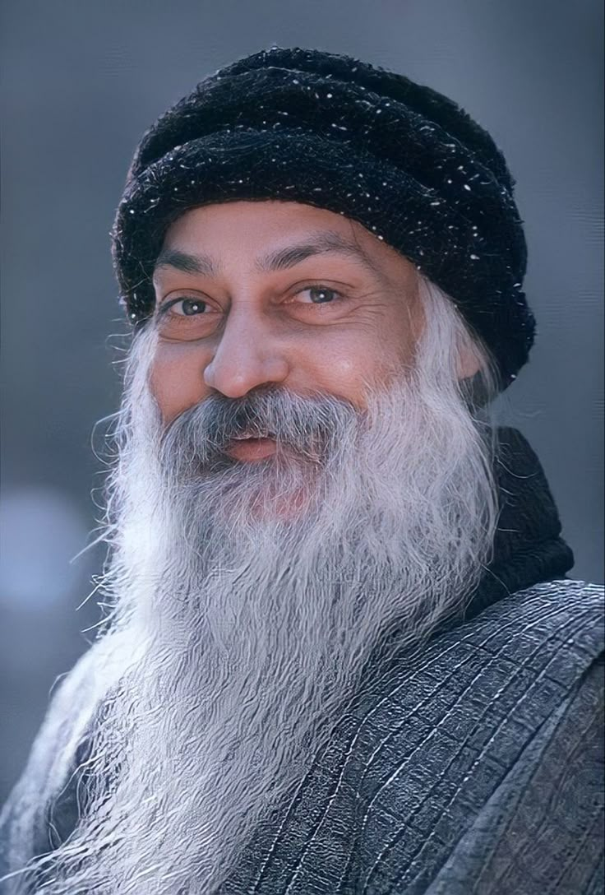
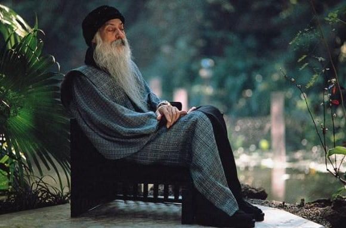

Who Was Osho?
Osho (1931–1990), widely known earlier as Bhagwan Shree Rajneesh and commonly called Rajneesh during much of his early public career, was an Indian spiritual teacher and the central figure associated with the Rajneesh movement. His extensive talks addressed meditation, consciousness, individuality, love, freedom, religion, and the possibility of inner transformation.
Born as Chandra Mohan Jain, he later became known publicly as Acharya Rajneesh and subsequently Bhagwan Shree Rajneesh before adopting the name Osho near the end of his life. His public career developed through lectures, meditation programs, books compiled from recorded talks, and communities formed by his followers in India and other parts of the world.
Osho became particularly well known for his emphasis on meditation and awareness. He presented meditation not simply as the acceptance of a religious doctrine, but as a practice through which individuals could observe the activity of the mind and become more aware of thoughts, emotions, habits, and patterns of behaviour.
His teachings drew upon a remarkably wide range of religious, philosophical, and spiritual traditions. His talks frequently engaged with Zen Buddhism, Taoism, Sufism, Tantra, Hindu traditions, and Buddhism, while also discussing the work of modern Western writers, psychologists, and philosophers. These traditions were often interpreted through his own distinctive emphasis on meditation, awareness, and individual transformation.
A central feature of Osho's approach was his criticism of unquestioned belief and social conditioning. He frequently encouraged people to examine inherited religious, moral, and social assumptions rather than accepting them automatically. At the same time, his teachings and the movement that developed around him became highly controversial, making Osho a significant but debated figure in the history of modern spirituality.
Osho: Quick Facts
- Name — Osho; formerly known as Bhagwan Shree Rajneesh and Rajneesh
- Born — 11 December 1931
- Died — 19 January 1990
- Birthplace — Kuchwada, Madhya Pradesh, India
- Known for — Meditation teachings, spiritual discourses, and ideas concerning awareness, freedom, love, and individuality
- Major influences and traditions discussed — Zen, Taoism, Tantra, Sufism, Buddhism, Hindu traditions, and Western philosophy
- Major subject — Human consciousness and awareness
- Associated practice — Dynamic Meditation and other meditation methods
- Historical period — Twentieth-century Indian spiritual and intellectual life
Osho's Early Life and Education

Osho was born as Chandra Mohan Jain on 11 December 1931 in Kuchwada, a village in present-day Madhya Pradesh, India. He was born during the final decades of British rule in India and grew up in a Jain family. Accounts of his childhood, including recollections later associated with his own autobiographical narratives, frequently describe him as unusually independent and inclined to question religious and social conventions.
Biographical accounts state that he spent part of his early childhood with his maternal grandparents. Osho himself later spoke about this period as important to his development, particularly because of the relative freedom he believed it gave him. Such personal recollections are useful for understanding how he later interpreted his own life, although they should not always be treated in the same way as independently verifiable historical evidence.
His formal education brought him increasingly into contact with philosophy, public speaking, and intellectual debate. He completed a bachelor's degree in philosophy and subsequently undertook postgraduate study at Sagar University, where biographical sources report that he received a master's degree in philosophy in 1957. His academic training exposed him to philosophical argument and debate, interests that remained visible throughout his later public career.
After completing his postgraduate education, Rajneesh began teaching philosophy. He held a teaching position in Raipur before becoming associated with the University of Jabalpur, where he taught philosophy during the late 1950s and early 1960s. At the same time, he increasingly travelled and gave public lectures, gradually becoming better known beyond the academic environment.
During the 1950s and 1960s, he developed a reputation as a forceful and controversial public speaker. His lectures challenged established religious beliefs, social conventions, and unquestioned traditions, while repeatedly emphasizing individual inquiry and direct experience. By the mid-1960s, his public activities had become increasingly important, and he eventually left university teaching to devote himself more fully to speaking, meditation programs, and the growing movement around his teachings.
What Did Osho Teach?

Osho's teachings covered an exceptionally wide range of subjects. Rather than presenting a single systematic philosophical doctrine comparable to a conventional academic system of philosophy, he delivered thousands of talks on meditation, consciousness, individuality, relationships, love, creativity, religion, death, and personal transformation. Much of the material published under his name consists of edited transcripts of these recorded talks.
A recurring theme throughout his teaching was the importance of awareness. Osho argued that people often live automatically, responding through habits, fears, memories, desires, and forms of social conditioning without carefully observing the processes shaping their behaviour. Meditation, in his approach, was intended to make these processes more visible to the individual.
He repeatedly emphasized the importance of direct experience. In his view, religious belief could become an obstacle when it was accepted merely because it had been inherited from a family, society, or religious institution. He therefore encouraged listeners to question established assumptions and to examine whether spiritual or philosophical claims had meaning within their own experience.
Osho also engaged extensively with older religious and philosophical traditions. His talks discussed Zen Buddhism, Taoism, Sufism, Tantra, Buddhism, Hindu traditions, Christianity, and other systems of religious thought. He did not, however, simply reproduce traditional interpretations. He frequently reinterpreted these traditions through his own emphasis on meditation, psychological transformation, freedom, and individual awareness.
His approach was deliberately provocative and often critical of organized religion, conventional morality, nationalism, and social conformity. This made him attractive to many followers seeking alternative approaches to spirituality, but it also made him a deeply controversial public figure. Understanding Osho's teaching therefore requires attention both to the themes he emphasized and to the distinctive, sometimes highly unconventional ways in which he interpreted established religious and philosophical traditions.
Osho and Meditation: Why Was Meditation Important?
Meditation occupies a central position in Osho's teachings. He presented it not merely as a technique of concentration or as withdrawal from ordinary life, but as a process of becoming more attentive to one's thoughts, emotions, bodily sensations, and habitual reactions. For Osho, meditation was closely connected with the attempt to observe experience without immediately becoming absorbed in every thought or feeling.
This emphasis on observation is closely related to his frequent use of the idea of awareness or witnessing. He encouraged practitioners to notice the movement of the mind rather than trying simply to suppress thoughts. The intended shift was from automatic identification with mental activity toward a more reflective awareness of thoughts and emotions as changing experiences.
Osho also became known for developing and promoting a number of active meditation techniques. Among the best known is Dynamic Meditation, a structured practice involving energetic activity and breathing followed by stages intended to lead toward silence and stillness. The technique became one of the most recognizable practices associated with the Osho movement.
His use of active techniques reflected his belief that many modern people may find it difficult to enter prolonged stillness immediately. Movement, breathing, vocal expression, physical exertion, and periods of emotional release were therefore incorporated into some practices before quieter stages of observation. These methods distinguished his approach from the popular assumption that meditation must always begin and end with silent sitting.
Osho's meditation methods should nevertheless not be understood as a single uniform system. Different techniques associated with his teaching use different combinations of movement, silence, breathing, sound, and observation. Their common purpose within his broader approach was to create conditions in which habitual mental activity could be noticed rather than followed automatically.
Osho's Approach to Awareness
Awareness, in Osho's teaching, was more than temporary relaxation. He repeatedly connected it with the capacity to remain attentive to experience while reducing automatic identification with thoughts, emotions, and social roles. The idea was not necessarily to eliminate every thought but to become conscious of the difference between the changing contents of the mind and the act of observing them.
This emphasis helps explain why meditation became central to almost every major theme in his teaching. Whether discussing love, fear, death, relationships, creativity, or religion, Osho frequently returned to the argument that greater awareness could change the way individuals relate to their experiences. Meditation therefore functioned as a central practical element within his broader vision of individual transformation.
What Is Osho Dynamic Meditation?
Osho Dynamic Meditation is an active meditation method developed and introduced by Osho during the twentieth century. Unlike meditation practices that begin with quiet sitting, Dynamic Meditation combines vigorous physical activity with periods of stillness and observation. It became one of the most recognizable meditation techniques associated with Osho and the wider Rajneesh movement.
The practice is traditionally structured in five stages. These involve intense and irregular breathing, expressive physical and emotional activity, rhythmic movement accompanied by the sound Hoo, a sudden period of complete stillness, and a final stage of celebration through movement or dance. The complete practice is commonly presented as lasting approximately one hour.
Osho presented active meditation partly in response to what he regarded as the difficulties experienced by modern people when attempting to enter silence immediately. In his own explanation, accumulated mental activity, bodily tension, and emotional patterns could make stillness difficult. Dynamic Meditation was therefore designed to use intense activity before moving toward silence and observation.
The vigorous stages are not, however, presented as the final purpose of the practice. A central element of Osho's teaching is witnessing: remaining aware of what is occurring rather than becoming completely lost in physical movement, emotion, or thought. The period of stillness is especially important because it directs attention toward observation rather than further activity.
Dynamic Meditation is historically significant because it represents a modern reinterpretation of meditation practice rather than a simple reproduction of a single traditional Indian technique. Scholars have noted Osho's broader tendency to combine elements from Indian spiritual traditions with ideas drawn from modern psychology and personal-growth movements. For this reason, Dynamic Meditation is best understood within the distinctive twentieth-century spiritual environment in which Osho taught.
Osho's Philosophy of Awareness and Consciousness
Awareness is one of the most persistent themes throughout Osho's teachings. He repeatedly encouraged people to observe their thoughts, emotions, desires, fears, and habits rather than automatically identifying with everything that appears in the mind. For Osho, a more conscious life begins with the capacity to notice what is happening within oneself.
This emphasis is closely connected with his idea of witnessing. In Osho's language, witnessing involves observing mental and emotional activity without immediately becoming absorbed by it. Thoughts may arise, emotions may change, and bodily sensations may appear, but the practitioner is encouraged to develop an observing attitude toward these experiences.
Osho did not present awareness merely as intellectual self-knowledge. Knowing facts about one's personality was, in his view, different from directly observing one's experience as it unfolds. Meditation was therefore intended to cultivate a more immediate form of attention in which habitual reactions could become visible rather than operating automatically.
He also connected awareness with freedom. If a person's behavior is strongly shaped by unconscious habits, fears, desires, or social expectations, Osho argued that the person may act repeatedly without fully recognizing why. Greater awareness, in his teaching, creates the possibility of responding more consciously rather than reacting automatically.
Awareness Rather Than Mechanical Living
Osho frequently described ordinary human behavior as heavily influenced by conditioning. Family expectations, education, religious beliefs, cultural traditions, and social conventions can all shape how a person understands himself or herself. His teaching encouraged people to examine these influences instead of assuming that inherited ideas must automatically determine their lives.
This did not necessarily mean that every tradition or social practice should simply be rejected. The more important question in Osho's approach was whether a person was acting consciously or merely repeating inherited patterns. Awareness therefore became a method of inquiry directed both inward, toward one's own mind, and outward, toward the institutions and beliefs that shape human life.
Osho on Freedom, Individuality, and Society
Freedom was another major theme in Osho's teachings. He frequently criticized conformity when it required individuals to accept beliefs, moral rules, or social roles without personal examination. His emphasis on freedom was closely connected with his broader concern for awareness, meditation, and the development of what he described as genuine individuality.
Osho's idea of individuality should not simply be understood as doing whatever one wants at every moment. In his teaching, individuality was associated with becoming more conscious of the forces that influence one's behavior. A person who merely reacts to social pressure, fear, or desire may believe that he or she is free while still being strongly controlled by unconscious patterns.
He therefore connected freedom with responsibility for one's own inner life. Meditation and self-observation were presented as ways of recognizing habitual patterns and reducing automatic dependence on external approval. The ideal was not simply rebellion against society, but a more conscious relationship with one's own beliefs, choices, and actions.
Osho was often sharply critical of institutions that he believed encouraged unquestioned obedience. His public talks challenged established religious authorities, conventional morality, political ideologies, and other social systems. These criticisms were an important reason why he became both influential and controversial in modern India and internationally.
At the same time, Osho's language about freedom was part of a broader and distinctive spiritual worldview rather than a systematically organized political philosophy. His ideas were primarily expressed through thousands of public discourses rather than through a single formal philosophical system. Interpretations of his views should therefore distinguish between recurring themes in his teachings and later attempts to construct a unified doctrine from them.
Osho on Love, Relationships, and Attachment
Osho spoke extensively about love, relationships, and human attachment. A recurring theme in his discussions was the distinction between love and possessiveness. He argued that relationships can become restrictive when one person attempts to control, dominate, or treat another person as a possession.
In Osho's teaching, love was frequently connected with freedom and awareness. He questioned the idea that genuine affection necessarily requires constant control or ownership. Instead, he often presented love as something that should allow individuals to remain conscious and distinct rather than losing all individuality within a relationship.
His discussions of relationships were also connected with his criticism of social conditioning. Osho questioned conventional assumptions about marriage, sexuality, jealousy, and romantic attachment, often using deliberately provocative language. These positions formed an important part of his public reputation and attracted both committed followers and strong criticism.
Osho's openness in discussing sexuality and intimacy was particularly controversial within the religious and cultural contexts in which he began teaching. He challenged ascetic attitudes that treated sexual desire as inherently opposed to spiritual life and explored sexuality as part of his broader discussion of consciousness, repression, and personal freedom.
These ideas should nevertheless not be treated as universally accepted philosophical or religious principles. Osho's interpretations were his own and often departed from conventional Hindu, Buddhist, Jain, and other religious teachings. His views on love and sexuality therefore remain an important part of both his influence and the controversies surrounding his movement.
Osho and Zen: What Was His Connection to Zen Buddhism?
Zen Buddhism was one of the traditions that Osho discussed most extensively in his public talks. He delivered numerous discourses on Zen masters, Zen stories, meditation, and the relationship between direct experience and conceptual thinking. Zen was therefore an important source of ideas and imagery within his wider body of teaching.
Osho was particularly attracted to what he understood as Zen's emphasis on direct experience. He frequently contrasted intellectual knowledge with personal realization, arguing that collecting religious or philosophical beliefs was not the same as directly experiencing awareness. Meditation, in his approach, was intended to move beyond merely theoretical understanding.
He also emphasized the limitations of excessive conceptual thinking. Language and ideas can be useful, but Osho repeatedly suggested that they can become obstacles when people mistake descriptions of experience for the experience itself. This theme helped explain his interest in Zen stories, paradoxes, silence, and sudden changes in perspective.
However, Osho's interpretation of Zen should not automatically be identified with traditional Zen Buddhism. He was not simply a Zen teacher transmitting one established lineage. Instead, he commented selectively on Zen while also drawing from Taoism, Sufism, Tantra, Hindu traditions, modern psychology, and other sources.
His use of Zen therefore illustrates the broader character of his thought: he brought together ideas from multiple religious and philosophical traditions and interpreted them through his own emphasis on meditation, awareness, individuality, and inner transformation. This creative and eclectic approach contributed greatly to his international influence while also making it difficult to classify his teachings within any single traditional school.
Osho's Views on Religion and Organized Religion
Osho was highly critical of organized religion, particularly when he believed that religious institutions had transformed spiritual inquiry into rigid systems of belief, authority, and social conformity. Throughout his public career, he frequently attacked established religious structures and questioned the authority of priests, scriptures, and inherited doctrines when they discouraged personal investigation.
At the same time, Osho was deeply engaged with religious and spiritual traditions. His thousands of recorded talks discussed Buddhism, Hinduism, Jainism, Christianity, Islam, Taoism, Zen, Sufism, Tantra, and numerous individual teachers and mystics. His criticism was therefore not simply a rejection of religion as a subject of inquiry, but a challenge to what he regarded as the institutionalization and dogmatization of spiritual experience.
A recurring distinction in Osho's teaching was between direct experience and belief. He argued that accepting a religious doctrine because it had been inherited from a family, community, or tradition was different from personally investigating the experiences to which religious teachings referred. Meditation and self-observation were presented as practical alternatives to relying entirely on external authority.
Osho's approach to religion was also deliberately eclectic. He drew ideas, stories, concepts, and practices from different traditions and frequently reinterpreted them for modern audiences. Scholars have consequently described his teachings as a distinctive modern synthesis rather than a straightforward continuation of any one Hindu, Buddhist, or other religious lineage.
For this reason, Osho's discussions of traditional religions should be understood as his interpretations, not automatically as authoritative accounts of those traditions. His rejection of established institutions and his attempt to construct a spirituality centered on meditation and personal experience became defining features of the Rajneesh movement and contributed significantly to both his influence and his controversy.
Osho on Death and Living Fully
Osho frequently discussed death as a fundamental question of human existence. He argued that fear of death can influence human behavior in powerful ways and that people often avoid confronting mortality even though awareness of death is inseparable from an honest understanding of life.
Rather than treating death solely as something that should be ignored or psychologically avoided, Osho encouraged reflection on its inevitability. In his teaching, the temporary and changing character of human life could become a reason for greater attentiveness to the present rather than an excuse for despair.
His discussions of death were closely connected with his broader emphasis on awareness. Osho repeatedly argued that a person who lives mechanically may postpone important questions indefinitely. Awareness of mortality, by contrast, can bring attention to how one is actually living and whether one's life is being directed primarily by habit, fear, or social expectation.
Osho also discussed death within wider spiritual traditions that explored meditation, consciousness, and the possibility of forms of awareness not reducible to ordinary egoic identity. Such discussions reflect his own spiritual worldview and should be distinguished from claims that can be independently established through historical or scientific evidence.
The central practical theme in his reflections on death was therefore not simply speculation about what happens after life ends. Osho often used the reality of mortality to emphasize living consciously: paying attention to experience, questioning unnecessary fear, and becoming more fully engaged with the life that is presently being lived.
Osho on Creativity and Individual Expression
Osho regarded creativity as an important expression of human individuality. He encouraged people to explore activities such as art, music, dance, meditation, and other forms of personal expression. However, his understanding of creativity extended beyond the production of paintings, books, or other recognized works of art.
In Osho's broader use of the term, creativity could describe a way of living. A creative person, in this sense, does not simply repeat inherited patterns without reflection. Creativity involves responsiveness, experimentation, and the capacity to approach situations with attention rather than functioning entirely through habit.
This idea was closely connected with his criticism of social conditioning. Osho frequently argued that education, family expectations, religion, and social conventions can encourage people to reproduce established patterns. His emphasis on individuality encouraged people to examine these influences and develop forms of expression that they regarded as personally meaningful.
Osho also connected creativity with spontaneity. He often contrasted spontaneous action with behavior that is excessively governed by fear, rigid moral rules, or the constant search for social approval. This did not form a systematic academic theory of creativity, but it was a recurring element of his wider spiritual language.
Creativity therefore occupies an important place within Osho's broader vision of awareness and individuality. Meditation was intended to make a person more conscious of habitual patterns, while creative living represented the possibility of responding to life with greater freedom and participation rather than simply repeating the past. Osho's broader innovations in modern spirituality and meditation have also been examined by scholars as part of the twentieth-century transformation of Indian spiritual traditions.
Osho's Philosophical and Spiritual Influences
Osho's teachings drew upon an exceptionally wide range of philosophical, religious, and spiritual traditions. However, it is important not to describe these traditions as influences in the simple sense of a student faithfully following a particular school. Osho frequently selected ideas, stories, practices, and teachers from different traditions and interpreted them through his own emphasis on meditation, awareness, individuality, and direct experience.
This eclectic approach makes Osho difficult to classify within a single philosophical or religious tradition. Modern scholarship commonly discusses his work in relation to new religious movements, modern spirituality, reinterpretations of yoga, and the global transmission of Indian religious ideas. His teachings often combined traditional sources with concepts drawn from modern psychology and contemporary Western culture.
Zen Buddhism
Zen was among the traditions Osho discussed most extensively. He was particularly interested in meditation, direct experience, paradox, silence, and the limits of purely intellectual knowledge. Osho delivered numerous talks on Zen masters and stories, but his interpretation was his own and should not be confused with transmission within an established Zen lineage.
Taoism
Osho frequently discussed figures such as Laozi and themes associated with Taoist thought, including naturalness, spontaneity, and living without unnecessary resistance. He interpreted these ideas through his own concern with awareness and the ability to allow life to unfold without excessive psychological control. His presentations were interpretive rather than systematic scholarly accounts of classical Taoist philosophy.
Tantra
Tantra became especially important to Osho's public reputation. He interpreted Tantric traditions as offering possibilities for transformation through engagement with, rather than simple rejection of, aspects of human experience. Scholars have described his approach as a highly influential modern reformulation of Tantra, often called Neo-Tantra, which differed in significant ways from historical Tantric traditions.
Sufism
Sufi teachers, stories, and traditions were also frequent subjects of Osho's talks. He was interested in themes such as love, transformation, spiritual searching, and the relationship between ordinary identity and mystical experience. As with his treatment of other traditions, Osho used Sufi material selectively and incorporated it into his own wider spiritual framework rather than presenting himself as a teacher within a formal Sufi order.
Western Philosophy and Modern Thought
Osho also commented on numerous Western philosophers, writers, and modern intellectual figures. His talks discussed thinkers such as Friedrich Nietzsche, Søren Kierkegaard, and Jean-Paul Sartre, among many others. These discussions were generally interpretive and rhetorical rather than academic examinations of their complete philosophical systems.
The result of these diverse engagements was a distinctive and often unconventional body of teaching. Osho's importance lies partly in this unusual synthesis: he helped reinterpret and transmit ideas associated with Asian spiritual traditions to international audiences while simultaneously reshaping those ideas through modern psychology, individualism, sexuality, and twentieth-century countercultural thought.
Osho on Social Conditioning and the Individual
One of the recurring ideas in Osho's teachings is that human beings are strongly shaped by social conditioning. From childhood, people acquire beliefs, values, expectations, fears, and patterns of behavior from their families, educational systems, religions, and wider societies. Osho frequently questioned whether people were consciously choosing their way of life or simply reproducing ideas that had been given to them by others.
His criticism of conditioning was closely connected with his emphasis on awareness. Osho encouraged individuals to observe the beliefs and habits operating within them rather than automatically identifying with every thought or social role. In this sense, awareness was presented as a process of becoming conscious of influences that might otherwise remain unnoticed.
This did not necessarily mean that every inherited belief or social tradition had to be rejected. The more important question in Osho's approach was whether a person had examined these influences consciously. An individual could continue to follow a tradition, but Osho emphasized the difference between conscious participation and unquestioning conformity.
The idea of social conditioning connects several major themes in his teachings, including meditation, freedom, individuality, and awareness. Osho repeatedly returned to the question of whether human beings are living attentively in the present or merely repeating psychological and social patterns acquired in the past.
His emphasis on individuality should therefore not be understood simply as a call to be different from everyone else. In his teaching, individuality was associated with discovering one's own awareness and responding to life more consciously rather than allowing inherited expectations alone to determine one's identity.
Books and Teachings by Osho
Osho did not primarily become known through conventional philosophical treatises written as systematic arguments. A large part of the material published under his name consists of recorded lectures, public discourses, answers to questions, interviews, and other spoken teachings that were subsequently transcribed and edited for publication.
His published works cover an exceptionally wide range of subjects. These include meditation, consciousness, Zen, Buddhism, Taoism, Tantra, love, relationships, death, creativity, religion, psychology, and individual freedom. Many individual books are therefore best understood as selections or edited presentations of teachings delivered during particular periods of his life.
This method of publication is important when studying Osho as a thinker. Unlike a philosopher who presents one carefully structured theoretical system in a single work, Osho's ideas are distributed across a large body of talks delivered to different audiences and in different historical contexts.
Readers should therefore distinguish between Osho's original spoken discourses and later editorial compilations. The title of a modern book does not always indicate that Osho personally wrote the work as a conventional book from beginning to end; many publications organize material drawn from lectures delivered over a particular period.
Despite this lack of a single systematic philosophical treatise, recurring themes appear throughout his teachings. Meditation and awareness form a central thread, while his discussions of religion, individuality, love, freedom, and consciousness reveal his continuing concern with the transformation of human experience.
Major Themes in Osho's Writings
- Meditation and awareness
- Zen and Buddhism
- Freedom and individuality
- Love and relationships
- Death and consciousness
- Creativity and spontaneity
- Religion and spiritual experience
Why Was Osho Controversial?
Osho's life and movement were surrounded by significant controversy. His strong criticism of established religion, his unconventional public discussions of sexuality and relationships, and his rejection of many social conventions attracted devoted followers but also produced substantial opposition and criticism.
The Rajneesh movement expanded internationally and eventually developed large communities around Osho's teachings. Its visibility, distinctive lifestyle, wealth, organizational structure, and relationship with surrounding societies made it one of the most controversial new religious movements of the late twentieth century.
The most serious controversies occurred during the period of Rajneeshpuram in Oregon during the 1980s. Members of the movement's leadership were later implicated in serious criminal activities, including the 1984 salmonella poisoning attack in The Dalles, Oregon. These events became one of the most notorious episodes associated with the history of the Rajneesh movement.
Historical discussion requires an important distinction between the actions of individual members and questions concerning Osho's own legal responsibility. Osho was not convicted for the 1984 salmonella attack. However, he became involved in a separate U.S. federal case concerning immigration-related offenses and ultimately entered into a plea agreement in 1985 before leaving the United States.
These events are an essential part of Osho's historical context and should not be ignored when studying his life. At the same time, a careful account should distinguish documented criminal actions, legal findings, allegations, and the separate philosophical and meditation teachings contained in his extensive body of recorded discourses.
Osho and Rajneeshpuram
Rajneeshpuram was a planned community established by followers of Osho in Wasco County, Oregon, during the early 1980s. Built on a large ranch property, the community developed into the most visible institutional center of the Rajneesh movement in the United States and attracted residents and visitors from many countries.
The community included housing, administrative institutions, communal facilities, and infrastructure intended to support a large population. Rajneeshpuram represented an ambitious attempt to create a self-contained community organized around the movement's spiritual and social ideals.
Its rapid development also produced serious conflict with surrounding communities and government authorities. Disputes emerged concerning land use, local political influence, immigration, municipal authority, and the relationship between the rapidly growing community and the surrounding region.
During this period, members of the movement's leadership became involved in a series of criminal activities that later led to investigations and legal proceedings. The exposure of these crimes, together with wider legal and political conflicts, contributed to the collapse of the Rajneeshpuram community during 1985.
The Rajneeshpuram period remains essential to understanding the historical reception of Osho and the Rajneesh movement. It demonstrates that the history of a spiritual movement can involve both philosophical teachings and complex institutional developments, and the two dimensions should neither be confused nor artificially separated.
Osho's Influence and Legacy
Osho remains a widely read and internationally recognized modern Indian spiritual teacher. His recorded talks and published books continue to circulate in many languages, while meditation practices associated with his teachings continue to be taught and practiced in different parts of the world.
His influence is particularly visible in modern discussions of meditation, awareness, spirituality, personal freedom, relationships, and alternative approaches to religious experience. Osho's willingness to discuss a wide range of Eastern and Western traditions also introduced many readers to ideas from Zen, Taoism, Buddhism, Tantra, Sufism, and modern philosophy.
One distinctive feature of his legacy is his development and popularization of active meditation methods. Practices associated with his teaching attempted to combine movement, breathing, sound, emotional expression, and periods of silence. These methods contributed to his continuing influence within parts of the modern meditation and personal-growth movement.
Osho's legacy, however, cannot be understood without acknowledging the controversies surrounding the movement that developed around him. Critics have raised serious questions concerning leadership, organization, institutional power, and events connected with Rajneeshpuram. These historical issues remain an important part of any balanced assessment.
Admirers, meanwhile, continue to regard his teachings on awareness, meditation, individuality, and freedom as personally transformative. A balanced study of Osho should therefore recognize both the continuing influence of his spiritual teachings and the complex, sometimes deeply controversial history of the movement associated with his name.
Osho's Main Philosophical and Spiritual Ideas
Osho's thought is broad and internally varied rather than organized as a single systematic philosophical doctrine. His teachings developed through thousands of recorded talks addressing meditation, religion, psychology, consciousness, love, freedom, and human existence. Nevertheless, several recurring themes provide an important framework for understanding his approach to spiritual and personal transformation.
These ideas should be understood primarily in the context of Osho's spoken teachings rather than as a fixed philosophical system comparable to a traditional academic treatise. He frequently interpreted ideas differently depending on his audience and the religious or philosophical tradition being discussed. The concepts below therefore represent recurring themes rather than a complete and formally unified doctrine.
Awareness
Awareness is one of the most persistent themes in Osho's teachings. He encouraged people to observe their thoughts, emotions, desires, and patterns of behavior instead of automatically identifying with everything occurring within the mind. This practice of observation was closely connected with what he often described as witnessing.
In this approach, awareness does not necessarily mean suppressing thoughts or attempting to create a permanently empty mind. Instead, the individual learns to notice mental activity without immediately reacting to it or becoming completely absorbed by it. Osho connected this increased attentiveness with the possibility of living less mechanically.
Meditation
Meditation was presented by Osho as a practical means of cultivating awareness. He discussed traditional forms of silent meditation but also developed and promoted active methods involving breathing, movement, sound, emotional expression, and periods of stillness.
His approach reflected the belief that many modern individuals may find it difficult to move immediately into silence because of physical tension, mental activity, and emotional restlessness. Active meditation methods were therefore intended to provide a different route toward observation and stillness rather than assuming that meditation must always begin with quiet sitting.
Freedom
Freedom was another major theme in Osho's thought. He frequently criticized blind conformity and questioned systems of belief or authority that, in his view, discouraged individuals from examining their own experience. He encouraged people to investigate inherited assumptions rather than accepting them solely because they came from society, religion, family, or tradition.
Osho's idea of freedom was closely connected with awareness. A person who does not recognize the psychological and social influences shaping their behavior may believe they are acting freely while merely repeating familiar patterns. Greater awareness was therefore presented as creating more possibility for conscious choice.
Individuality
Osho placed considerable emphasis on becoming an individual. By this, he generally meant more than simply being unusual or rejecting society for its own sake. Individuality involved becoming conscious of one's own experience rather than allowing collective expectations alone to define one's identity.
This emphasis also explains his frequent criticism of social conditioning. He argued that people can inherit beliefs, fears, ambitions, and identities without ever closely examining them. The task of the individual, in his approach, was to become sufficiently aware to distinguish conscious choice from automatic repetition.
Love Without Possessiveness
Osho frequently discussed love in connection with freedom and individuality. He criticized relationships in which affection becomes inseparable from possession, jealousy, domination, or attempts to control another person. In his discussions, these patterns could transform relationships into forms of psychological dependence.
He therefore emphasized the importance of allowing both individuals in a relationship to retain their freedom and individuality. Osho's views on love and sexuality were often deliberately unconventional and remain among the more controversial aspects of his teaching, particularly when compared with traditional religious and social expectations.
Direct Experience
Osho repeatedly distinguished direct experience from merely accepting religious, philosophical, or spiritual beliefs on authority. He could discuss religious traditions at great length while simultaneously warning that intellectual knowledge about a spiritual idea was not the same as personally experiencing what that idea was intended to express.
This emphasis helps explain his interest in traditions such as Zen, Taoism, Sufism, and Tantra. Although his interpretations were often highly individual and should not automatically be treated as identical to traditional teachings, he repeatedly returned to the idea that spiritual understanding should involve lived awareness rather than belief alone.
Taken together, these themes connect meditation with a broader attempt to transform human experience. Awareness makes it possible to observe conditioning, meditation develops the practice of observation, and freedom and individuality describe the possibility of living with greater conscious participation rather than automatic conformity.
Osho's Philosophy Explained Simply
At its simplest, Osho's teaching can be understood as an invitation to become more conscious of how one thinks, feels, and lives. Rather than accepting every thought, emotion, social expectation, or religious belief automatically, he encouraged individuals to observe their experience more carefully.
Osho believed that people are often strongly influenced by habits, fears, psychological conditioning, social expectations, and unconscious reactions. Meditation and awareness were presented as practices through which a person could begin to recognize these patterns instead of being completely controlled by them.
His teaching did not present meditation merely as a method for relaxation. Meditation was connected with the practice of witnessing: noticing mental and emotional activity without immediately becoming identified with every thought or impulse. Osho associated this greater awareness with the possibility of responding to life more consciously.
He also emphasized freedom and individuality. Osho encouraged people to question inherited beliefs and social expectations, although his broader aim was not simply rebellion against society. The important distinction, in his approach, was between living through unconscious conformity and making choices with greater awareness.
His ideas about love followed a similar pattern. Osho questioned possessiveness and control in relationships and frequently connected love with freedom. His teachings therefore linked personal relationships with the larger themes of awareness, individuality, and conscious living.
Osho's philosophy can therefore be summarized as a broad spiritual approach centered on meditation, awareness, direct experience, and the attempt to live with greater freedom from unconscious psychological and social conditioning.
- Central question: How can a person become more conscious and aware of their own experience?
- Main practice: Meditation and witnessing one's thoughts, emotions, and patterns of behavior.
- Central idea: Awareness can help reveal habits and conditioning that normally operate automatically.
- Important value: Individual freedom combined with conscious responsibility for one's own life.
- View of society: Social and religious conditioning should be examined rather than accepted blindly.
- View of love: Love should not be reduced to possession, domination, or control over another person.
- Approach to spirituality: Direct experience and meditation are more important than accepting beliefs solely on authority.
- Overall goal: Greater awareness, freedom, and more conscious participation in life.
A Saying Associated with Osho
“Life is not a problem to be solved.”
Frequently Asked Questions About Osho
Who was Osho?
Osho was an Indian spiritual teacher and influential modern thinker whose teachings focused on meditation, awareness, consciousness, freedom, love, individuality, and spiritual experience.
What was Osho's real name?
Osho was born Chandra Mohan Jain. He later became widely known as Bhagwan Shree Rajneesh and eventually adopted the name Osho.
What is Osho famous for?
Osho is particularly known for his teachings on meditation, consciousness, awareness, freedom, love, individuality, and his interpretations of Zen, Tantra, Taoism, and other spiritual traditions.
What is Osho's philosophy?
Osho's teachings emphasize awareness, meditation, direct experience, individual freedom, and questioning social and religious conditioning. His work is broad rather than a single systematic philosophical doctrine.
What did Osho teach about meditation?
Osho regarded meditation as a way of developing awareness and observing the mind. He developed and promoted several meditation methods, including Dynamic Meditation.
What is Osho Dynamic Meditation?
Dynamic Meditation is a structured practice associated with Osho that combines active breathing, physical and expressive activity, periods of stillness, and observation.
What did Osho teach about freedom?
Osho emphasized freedom from unconscious conditioning and conformity. He encouraged individuals to examine inherited beliefs and become more conscious of their own choices.
What did Osho teach about love?
Osho frequently argued that love should not be based primarily on possession and control. He connected love with freedom, awareness, and individuality.
Was Osho a Buddhist?
Osho was not simply a Buddhist. He discussed Buddhism extensively, especially Zen, but also drew from Hindu, Jain, Taoist, Sufi, Tantric, and Western philosophical traditions.
What is Osho's connection with Zen?
Osho frequently discussed Zen's emphasis on meditation, direct experience, awareness, and the limitations of conceptual thinking. His interpretation of Zen was his own rather than a complete representation of traditional Zen Buddhism.
Was Osho controversial?
Yes. Osho was controversial because of his criticism of organized religion, unconventional teachings on sexuality and relationships, the development of his international movement, and events associated with the Rajneeshpuram community in Oregon.
What happened at Rajneeshpuram?
Rajneeshpuram was a large community established by Osho's followers in Oregon during the 1980s. The community became involved in serious political and legal conflicts, and several followers were convicted of criminal offenses.
When did Osho die?
Osho died on 19 January 1990 in Pune, India, at the age of 58.
Why is Osho still popular?
Osho remains widely read because his teachings address subjects that continue to interest modern audiences, including meditation, consciousness, relationships, freedom, spirituality, and personal transformation.
Related Indian Philosophers and Thinkers
Osho belongs to a much larger history of Indian philosophical and spiritual thought. Explore thinkers who approached questions of consciousness, self, reality, meditation, ethics, and human existence from different traditions.
Philosophy Branches Connected to Osho
Osho's teachings connect particularly strongly with philosophical questions concerning consciousness, the self, knowledge, existence, and human freedom. His emphasis on meditation and direct experience also creates connections with Indian and Buddhist approaches to understanding the mind.
Why Osho Still Matters
Osho remains an important and controversial figure in modern Indian spiritual thought. His extensive teachings brought questions about meditation, consciousness, freedom, love, individuality, and religious experience to international audiences.
His work cannot be reduced to a single philosophical system. It is a large body of spoken teachings influenced by numerous philosophical and religious traditions, interpreted through Osho's own distinctive approach to awareness and meditation.
Studying Osho therefore requires both appreciation of the ideas that made his teachings influential and careful attention to the controversies surrounding his movement and historical legacy.
Explore Great Philosophers